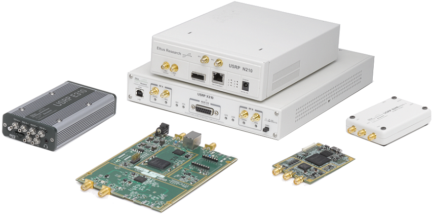

6. USRP en Python¶
{kind=link}
Dans ce chapitre, nous apprenons à utiliser l’API Python UHD pour contrôler et recevoir/transmettre des signaux avec un USRP qui est une série de SDRs fabriqués par Ettus Research (qui fait maintenant partie de NI). Nous discuterons de la transmission et de la réception sur l’USRP en Python, et nous plongerons dans les sujets spécifiques à l’USRP, notamment les args de streams ou flux, les sous-devices, les canaux, la synchronisation 10 MHz et PPS.
Installation de logiciels/pilotes¶
Bien que le code Python fourni dans ce manuel doive fonctionner sous Windows, Mac et Linux, nous ne fournirons que des instructions d’installation des pilotes/API spécifiques à Ubuntu 20 (bien que les instructions ci-dessous doivent fonctionner sur la plupart des distributions basées sur Debian). Nous allons commencer par créer une VM Ubuntu 20 VirtualBox ; n’hésitez pas à sauter la partie VM si votre système d’exploitation est déjà prêt.
Configuration d’une VM Ubuntu 20¶
(Optionel)
- Télécharger Ubuntu 20.04 Desktop .iso- https://ubuntu.com/download/desktop
- Installez et ouvrez VirtualBox.
- Créez une nouvelle VM. Pour la taille de la mémoire, je recommande d’utiliser 50% de la RAM de votre ordinateur.
- Créez le disque dur virtuel, choisissez VDI, et allouez dynamiquement la taille. 15 Go devraient suffire. Si vous voulez être vraiment sûr, vous pouvez utiliser plus.
- Démarrez la VM. Il vous demandera le support d’installation. Choisissez le fichier .iso du bureau Ubuntu 20. Choisissez “install ubuntu”, utilisez les options par défaut, et une fenêtre pop-up vous avertira des changements que vous êtes sur le point d’effectuer. Cliquez sur continuer. Choisissez le nom/mot de passe et attendez que la VM finisse de s’initialiser. Après avoir terminé, la VM va redémarrer, mais vous devez éteindre la VM après le redémarrage.
- Allez dans les paramètres de la VM (l’icône de l’engrenage).
- Sous système > processeur > choisissez au moins 3 processeurs. Si vous avez une carte vidéo réelle, alors dans affichage > mémoire vidéo > choisissez quelque chose de beaucoup plus élevé.
- Démarrez votre VM.
- Pour les USRP de type USB, vous devrez installer des ajouts invités VM. Dans la VM, allez dans Périphériques > Insérer le CD Guest Additions > cliquez sur run quand une boîte apparaît. Suivez les instructions. Redémarrez la VM, puis essayez de transférer l’USRP à la VM, en supposant qu’elle apparaisse dans la liste sous Périphériques > USB. Le presse-papiers partagé peut être activé via Dispositifs > Presse-papiers partagé > Bidirectionnel.
Installation de l’UHD et de l’API Python¶
Les commandes de terminal ci-dessous devraient compiler et installer la dernière version de UHD, y compris l’API Python :
sudo apt-get install git cmake libboost-all-dev libusb-1.0-0-dev python3-docutils python3-mako python3-numpy python3-requests python3-ruamel.yaml python3-setuptools build-essential
cd ~
git clone https://github.com/EttusResearch/uhd.git
cd uhd/host
mkdir build
cd build
cmake -DENABLE_TESTS=OFF -DENABLE_C_API=OFF -DENABLE_MANUAL=OFF ..
make -j8
sudo make install
sudo ldconfig
Pour plus d’aide, voir la page officielle d’Ettus Building and Installing UHD from source. Notez qu’il existe également des méthodes d’installation des pilotes qui ne nécessitent pas de construire à partir des sources.
Test des pilotes UHD et de l’API Python¶
Ouvrez un nouveau terminal et tapez les commandes suivantes :
python3
import uhd
usrp = uhd.usrp.MultiUSRP()
samples = usrp.recv_num_samps(10000, 100e6, 1e6, [0], 50)
print(samples[0:10])
Si aucune erreur ne se produit, vous êtes prêt à partir !
Analyse comparative de la vitesse de l’USRP en Python¶
(Optionel)
Si vous avez utilisé l’installation standard, la commande suivante devrait évaluer le taux de réception de votre USRP en utilisant l’API Python. Si l’utilisation de 56e6 a causé beaucoup d’échantillons perdus ou de dépassements, essayez de diminuer le nombre. Les échantillons perdus ne vont pas nécessairement ruiner quoi que ce soit, mais c’est un bon moyen de tester les inefficacités qui peuvent venir de l’utilisation d’une VM ou d’un ordinateur plus ancien, par exemple. Si vous utilisez un B 2X0, un ordinateur assez moderne avec un port USB 3.0 fonctionnant correctement devrait réussir à faire 56 MHz sans échantillons perdus, surtout avec num_recv_frames réglé aussi haut.
python /usr/lib/uhd/examples/python/benchmark_rate.py --rx_rate 56e6 --args "num_recv_frames=1000"
Réception¶
La réception d’échantillons à partir d’une USRP est extrêmement facile grâce à la fonction de commodité intégrée “recv_num_samps()”. Le code Python ci-dessous accorde l’USRP à 100MHz, utilise une fréquence d’échantillonnage de 1MHz et prélève 10 000 échantillons à partir de l’USRP, en utilisant un gain de réception de 50dB :
import uhd
usrp = uhd.usrp.MultiUSRP()
samples = usrp.recv_num_samps(10000, 100e6, 1e6, [0], 50) # unités: N, Hz, Hz, liste des canaux IDs, dB
print(samples[0:10])
Le [0] indique à l’USRP d’utiliser son premier port d’entrée et de ne recevoir qu’un seul canal d’échantillons (pour qu’un B210 reçoive sur deux canaux à la fois, par exemple, vous pourriez utiliser [0, 1]).
Voici une astuce si vous essayez de recevoir à un taux élevé mais que vous obtenez des débordements (des O s’affichent dans votre console). Au lieu de usrp = uhd.usrp.MultiUSRP(), utilisez :
usrp = uhd.usrp.MultiUSRP("num_recv_frames=1000")
qui rend le tampon de réception beaucoup plus grand (la valeur par défaut est de 32), ce qui permet de réduire les débordements. La taille réelle du tampon en octets dépend de l’USRP et du type de connexion, mais le simple fait de définir num_recv_frames à une valeur bien supérieure à 32 permet d’aider.
Pour des applications plus sérieuses, je recommande de ne pas utiliser la fonction recv_num_samps(), parce qu’elle cache une partie du comportement intéressant qui se passe sous le capot, et il y a une certaine configuration qui se produit à chaque appel que nous pourrions vouloir faire seulement une fois au début, par exemple, si nous voulons recevoir des échantillons indéfiniment. Le code suivant a la même fonctionnalité que recv_num_samps(), en fait c’est presque exactement ce qui est appelé lorsque vous utilisez cette fonction, mais maintenant nous avons la possibilité de modifier le comportement :
import uhd
import numpy as np
usrp = uhd.usrp.MultiUSRP()
num_samps = 10000 # nombre d'échantillons reçus
center_freq = 100e6 # Hz
sample_rate = 1e6 # Hz
gain = 50 # dB
usrp.set_rx_rate(sample_rate, 0)
usrp.set_rx_freq(uhd.libpyuhd.types.tune_request(center_freq), 0)
usrp.set_rx_gain(gain, 0)
# Configurer le flux et le tampon de réception
st_args = uhd.usrp.StreamArgs("fc32", "sc16")
st_args.channels = [0]
metadata = uhd.types.RXMetadata()
streamer = usrp.get_rx_stream(st_args)
recv_buffer = np.zeros((1, 1000), dtype=np.complex64)
# Démarrer le flux
stream_cmd = uhd.types.StreamCMD(uhd.types.StreamMode.start_cont)
stream_cmd.stream_now = True
streamer.issue_stream_cmd(stream_cmd)
# Recevoir des échantillons
samples = np.zeros(num_samps, dtype=np.complex64)
for i in range(num_samps//1000):
streamer.recv(recv_buffer, metadata)
samples[i*1000:(i+1)*1000] = recv_buffer[0]
# Arrêter le flux
stream_cmd = uhd.types.StreamCMD(uhd.types.StreamMode.stop_cont)
streamer.issue_stream_cmd(stream_cmd)
print(len(samples))
print(samples[0:10])
Avec num_samps fixé à 10 000 et le recv_buffer fixé à 1000, la boucle for sera exécutée 10 fois, c’est-à-dire qu’il y aura 10 appels à streamer.recv. Notez que nous avons codé en dur le recv_buffer à 1000 mais vous pouvez trouver la valeur maximale autorisée en utilisant streamer.get_max_num_samps(), qui se situe souvent autour de 3000 et quelques. Notez également que recv_buffer doit être 2d car la même API est utilisée lors de la réception de plusieurs canaux à la fois, mais dans notre cas, nous n’avons reçu qu’un seul canal, donc recv_buffer[0] nous a donné le tableau 1D d’échantillons que nous voulions. Pour l’instant, vous n’avez pas besoin d’en savoir trop sur la façon dont le flux démarre/arrête, mais sachez qu’il existe d’autres options que le mode “continu”, comme recevoir un nombre spécifique d’échantillons et faire en sorte que le flux s’arrête automatiquement. Bien que nous ne traitions pas les métadonnées dans cet exemple de code, elles contiennent toutes les erreurs qui se produisent, entre autres choses, que vous pouvez vérifier en regardant metadata.error_code à chaque itération de la boucle, si vous le souhaitez (les erreurs ont tendance à apparaître également dans la console elle-même, en raison de l’UHD, donc ne vous sentez pas obligé de les vérifier dans votre code Python).
Gain de réception¶
La liste suivante montre la gamme de gain des différents USRP, ils vont tous de 0dB au nombre spécifié ci-dessous. Notez que ce n’est pas du dBm, c’est essentiellement du dBm combiné à un décalage inconnu car ce ne sont pas des appareils calibrés.
- B200/B210/B200-mini: 76 dB
- X310/N210 with WBX/SBX/UBX: 31.5 dB
- X310 with TwinRX: 93 dB
- E310/E312: 76 dB
- N320/N321: 60 dB
Vous pouvez également utiliser la commande uhd_usrp_probe dans un terminal et dans la section RX Frontend il mentionnera la gamme de gain.
Pour spécifier le gain, vous pouvez utiliser la fonction normale set_rx_gain() qui prend la valeur du gain en dB, mais vous pouvez aussi utiliser set_normalized_rx_gain() qui prend une valeur de 0 à 1 et la convertit automatiquement dans la gamme de l’USRP que vous utilisez. Ceci est pratique lorsqu’on crée une application qui supporte différents modèles d’USRP. L’inconvénient de l’utilisation du gain normalisé est que vous n’avez plus vos unités en dB, donc si vous voulez augmenter votre gain de 10dB, par exemple, vous devez maintenant calculer la quantité.
Contrôle automatique du gain¶
Certains USRP, y compris les séries B200 et E310, prennent en charge la commande automatique de gain (AGC pour automatic gain controller en anglais) qui ajuste automatiquement le gain de réception en fonction du niveau du signal reçu, afin d’essayer de “remplir” au mieux les bits de l’ADC. L’AGC peut être activé en utilisant :
usrp.set_rx_agc(True, 0) # 0 pour le canal 0, c'est-à-dire le premier canal de l'USRP
Si vous avez une USRP qui n’implémente pas d’AGC, une exception sera levée lors de l’exécution de la ligne ci-dessus. Avec l’AGC activé, le réglage du gain ne fera rien.
Arguments relatifs aux flux¶
Dans l’exemple complet ci-dessus, vous verrez la ligne st_args = uhd.usrp.StreamArgs("fc32", "sc16"). Le premier argument est le format de données CPU, qui est le type de données des échantillons une fois qu’ils sont sur votre ordinateur hôte. UHD supporte les types de données CPU suivants lors de l’utilisation de l’API Python :
| Stream Arg | Numpy Data Type | Description |
|---|---|---|
| fc64 | np.complex128 | Complex-valued double-precision data |
| fc32 | np.complex64 | Complex-valued single-precision data |
Vous pouvez voir d’autres options dans la documentation de l’API UHD C++, mais elles n’ont jamais été implémentées dans l’API Python, du moins au moment de la rédaction de ce document.
Le deuxième argument est le format de données “over-the-wire”, c’est-à-dire le type de données lorsque les échantillons sont envoyés à l’hôte via USB/Ethernet/SFP. Pour l’API Python, les options sont : “sc16”, “sc12” et “sc8”, l’option 12 bits n’étant prise en charge que par certains USRP. Ce choix est important car la connexion entre l’USRP et l’ordinateur hôte est souvent le goulot d’étranglement, donc en passant de 16 bits à 8 bits, vous pouvez obtenir un taux plus élevé. Rappelez-vous également que de nombreux USRP ont des ADC limités à 12 ou 14 bits, utiliser “sc16” ne signifie pas que l’ADC est de 16 bits.
Pour la partie canal du st_args, voir la sous-section Sous-dispositif and Channels ci-dessous.
Transmettre¶
Similaire à la fonction pratique recv_num_samps(), UHD fournit la fonction send_waveform() pour transmettre un lot d’échantillons, un exemple est montré ci-dessous. Si vous spécifiez une durée (en secondes) plus longue que le signal fourni, il sera simplement répété. Il est utile de garder les valeurs des échantillons entre -1.0 et 1.0.
import uhd
import numpy as np
usrp = uhd.usrp.MultiUSRP()
samples = 0.1*np.random.randn(10000) + 0.1j*np.random.randn(10000) # créer un signal aléatoire
duration = 10 # secondes
center_freq = 915e6
sample_rate = 1e6
gain = 20 # [dB] Commencez doucement puis montez en grade
usrp.send_waveform(samples, duration, center_freq, sample_rate, [0], gain)
Pour plus de détails sur la façon dont cette fonction pratique fonctionne sous le capot, voir le code source ici.
Gain d’émission¶
Comme pour la réception, la plage de gain d’émission varie en fonction du modèle USRP, allant de 0 dB au nombre spécifié ci-dessous :
- B200/B210/B200-mini: 90 dB
- N210 with WBX: 25 dB
- N210 with SBX or UBX: 31.5 dB
- E310/E312: 90 dB
- N320/N321: 60 dB
Il existe également une fonction set_normalized_tx_gain() si vous souhaitez spécifier le gain d’émission en utilisant la plage 0 à 1.
Transmettre et recevoir simultanément¶
Si vous voulez émettre et recevoir en utilisant la même USRP en même temps, la clé est de le faire en utilisant plusieurs threads dans le même processus ; l’USRP ne peut pas couvrir plusieurs processus. Par exemple, dans l’exemple C++ txrx_loopback_to_file un thread séparé est créé pour exécuter l’émetteur, et la réception est faite dans le thread principal. Vous pouvez aussi simplement créer deux threads, un pour l’émission et un pour la réception, comme cela est fait dans l’exemple Python benchmark_rate. Un exemple complet n’est pas montré ici, simplement parce que ce serait un exemple assez long et que le benchmark_rate.py d’Ettus peut toujours servir de point de départ à quelqu’un.
Sous-dispositif, canaux et antennes¶
Une source fréquente de confusion lors de l’utilisation des USRP est de savoir comment choisir le bon ID de sous-dispositif et de canal. Vous avez peut-être remarqué que dans tous les exemples ci-dessus, nous avons utilisé le canal 0, et n’avons rien spécifié concernant le subdev. Si vous utilisez un B210 et que vous voulez juste utiliser RF:B au lieu de RF:A, tout ce que vous avez à faire est de choisir le canal 1 au lieu de 0. Mais sur les USRP comme le X310 qui ont deux slots pour carte fille, vous devez dire à UHD si vous voulez utiliser le slot A ou B, et quel canal sur cette carte fille, par exemple :
usrp.set_rx_subdev_spec("B:0")
Si vous voulez utiliser le port TX/RX au lieu de RX2 (par défaut), c’est aussi simple que cela :
usrp.set_rx_antenna('TX/RX', 0) # Réglez le canal 0 sur 'TX/RX'.
qui ne fait que contrôler un commutateur RF à bord de l’USRP, pour l’acheminer depuis l’autre connecteur SMA.
Pour recevoir ou émettre sur deux canaux à la fois, au lieu d’utiliser st_args.channels = [0] vous fournissez une liste, telle que [0,1]. Le tampon de réception des échantillons devra être de taille (2, N) dans ce cas, au lieu de (1,N). Rappelez-vous qu’avec la plupart des USRP, les deux canaux partagent un LO, donc vous ne pouvez pas indiquer différentes fréquences en même temps.
Synchronisation à 10 MHz et PPS¶
Un des énormes avantages de l’utilisation d’une USRP par rapport à d’autres SDR est leur capacité à se synchroniser à une source externe ou au GPSDO embarqué. Si vous avez connecté une source externe 10 MHz et PPS à votre USRP, vous voudrez vous assurer d’appeler ces deux lignes après avoir initialisé votre USRP :
usrp.set_clock_source("external")
usrp.set_time_source("external")
Si vous utilisez un GPSDO embarqué, vous utiliserez plutôt :
usrp.set_clock_source("gpsdo")
usrp.set_time_source("gpsdo")
Du côté de la synchronisation en fréquence, il n’y a pas grand chose d’autre à faire ; la LO utilisée dans le mélangeur de l’USRP va maintenant être liée à la source externe ou à GPSDO. Mais du côté du timing, vous pouvez souhaiter commander à l’USRP de commencer à échantillonner exactement sur le PPS, par exemple. Cela peut être fait avec le code suivant :
# copier l'exemple de réception ci-dessus, tout jusqu'à # Start Stream
# Attendez que 1 PPS se produise, puis réglez le temps au prochain PPS à 0.0
time_at_last_pps = usrp.get_time_last_pps().get_real_secs()
while time_at_last_pps == usrp.get_time_last_pps().get_real_secs():
time.sleep(0.1) # continuez à attendre jusqu'à ce que ça arrive - si cette boucle while ne se termine jamais alors le signal PPS n'est pas là.
usrp.set_time_next_pps(uhd.libpyuhd.types.time_spec(0.0))
# Planifie la réception des échantillons num_samps exactement 3 secondes après le dernier PPS.
stream_cmd = uhd.types.StreamCMD(uhd.types.StreamMode.num_done)
stream_cmd.num_samps = num_samps
stream_cmd.stream_now = False
stream_cmd.time_spec = uhd.libpyuhd.types.time_spec(3.0) # définir l'heure de début (essayez de modifier cela)
streamer.issue_stream_cmd(stream_cmd)
# Recevoir des échantillons. recv() retournera des zéros, puis nos échantillons, puis encore des zéros, pour nous dire que c'est terminé.
waiting_to_start = True # garder la trace de l'endroit où nous sommes dans le cycle (voir le commentaire ci-dessus)
nsamps = 0
i = 0
samples = np.zeros(num_samps, dtype=np.complex64)
while nsamps != 0 or waiting_to_start:
nsamps = streamer.recv(recv_buffer, metadata)
if nsamps and waiting_to_start:
waiting_to_start = False
elif nsamps:
samples[i:i+nsamps] = recv_buffer[0][0:nsamps]
i += nsamps
Si vous avez l’impression qu’il ne fonctionne pas, mais qu’il n’y a pas d’erreur, essayez de remplacer le chiffre 3.0 par un chiffre compris entre 1.0 et 5.0. Vous pouvez également vérifier les métadonnées après l’appel à recv(), en vérifiant simplement if metadata.error_code != uhd.types.RXMetadataErrorCode.none:.
Pour des raisons de débogage, vous pouvez vérifier que le signal 10MHz apparaît sur l’USRP en vérifiant le retour de usrp.get_mboard_sensor("ref_locked", 0). Si le signal PPS n’apparaît pas, vous le saurez car la première boucle while du code ci-dessus ne se terminera jamais.